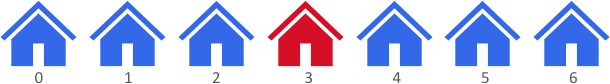
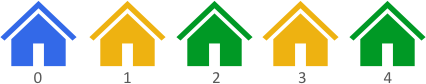

There are n houses evenly lined up on the street, and each house is beautifully painted. You are given a 0-indexed integer array colors of length n, where colors[i] represents the color of the ith house.
Return the maximum distance between two houses with different colors.
The distance between the ith and jth houses is abs(i - j), where abs(x) is the absolute value of x.
Example 1:
Input: colors = [1,1,1,6,1,1,1] Output: 3 Explanation: In the above image, color 1 is blue, and color 6 is red. The furthest two houses with different colors are house 0 and house 3. House 0 has color 1, and house 3 has color 6. The distance between them is abs(0 - 3) = 3. Note that houses 3 and 6 can also produce the optimal answer.
Example 2:
Input: colors = [1,8,3,8,3] Output: 4 Explanation: In the above image, color 1 is blue, color 8 is yellow, and color 3 is green. The furthest two houses with different colors are house 0 and house 4. House 0 has color 1, and house 4 has color 3. The distance between them is abs(0 - 4) = 4.
Example 3:
Input: colors = [0,1] Output: 1 Explanation: The furthest two houses with different colors are house 0 and house 1. House 0 has color 0, and house 1 has color 1. The distance between them is abs(0 - 1) = 1.
Constraints:
n == colors.length2 <= n <= 1000 <= colors[i] <= 100